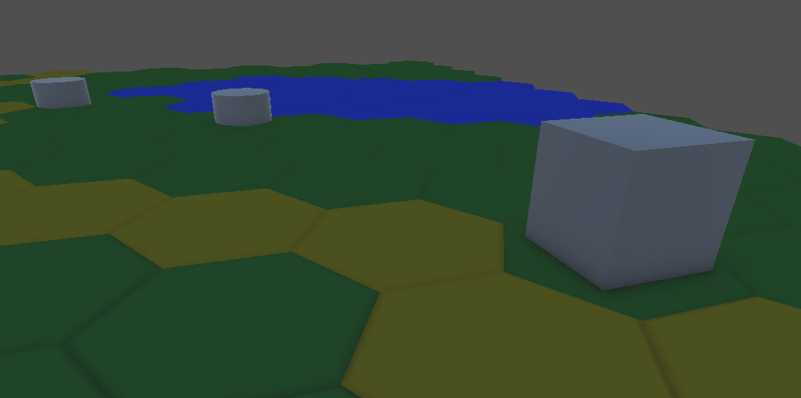
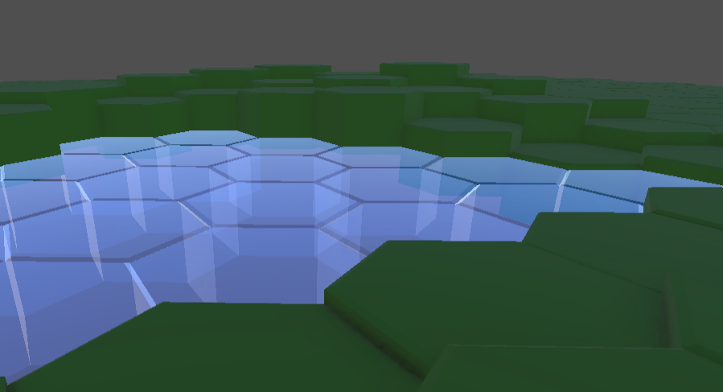
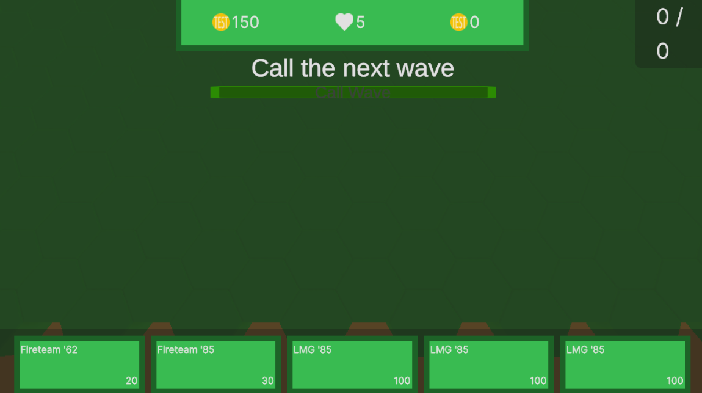

Tower Defence game (current working name) is a solo developement project made in Unity. The project started as a hobby project together with an associate, who works as the game designer, who is not involved in any of the technical aspects. Our initial goal was to teach the public about actual modern warfare trough a fun and interactive enviroment. We were both tired to the way the technicalities of warfare are shown in conteporary media, often leading to misleading if not completely wrong conclusions. As such this project attempts to blend the simple desing of a tower defence game with the more complext mechanics of modern warfare, hopefully creating a mixture that is both fun and educational. This project is currently ongoing and this page will be updated later.
As stated above, the goal of this project is to bring realism and new ways of thinking to the tower defence genre while being educational. Despite the grave matter of the theme in our game, we hope to achieve a light and fun mood. As such, ideally the game accidentally teaches the players some real life concepts while remaining fun. The game will work on a grid tile system to allow for more strategy in tower placement and enemy unit movement.
The project began with the creation of the basic map systems that will form the foundation of the levels. This meant creating a hex-based grid system, a pathfinding script to accompany it, a way to measure areas on that grid and finally the creation of a targeting script capable of processing area information. For the creation of the logic behind the hexagonal grid, I used Amit Patels website "redblobgames.com" as a resource. Initially the grid was implemented in a simple manner, each tile being a single game object, and maps being created by handplacing these tiles in the editor. This approach was problematic, as tile interactions then relied on raycasts, colliders and other unpredictable factors. These issues were however later remedied with the implementation of a "virtual grid", where the grid exists purely in code, and is merely represented as gameobject tiles on the map. This allows creating maps purely through code with custom editor tools. The additional abstraction also allows the ditching of the gameobject based map should it be necessary. The systems around units were an interesting issue. For example, due to having a grid-tile system, using native unity collision systems to track weapon fire zones felt unintuitive. As such, a new system based on the tiles had to be created to follow unit positions and track fire zones for the weapons/towers. A system utilizing unity event system was implemented. Each weapon tracks a set of grid nodes, a defined hex area, through the event system.

When a unit arrives into one of the nodes in the area, it's examined, and relevant parts of the script are notified. This essentially provides a way to track entries and exits in an area. However, the implementation of the entire targeting system was made quite hastily, leaving behind a mess of code, some of which had grown useless. In fact, this issue applied to large parts of the project, which prompted me to attempt a slight restructuring and scripting of the project to combat possible technical debt in the future.
While these more important efforts were underway, I also made strides into the creation of some simple menu systems. These were mostly unserious placeholders, but gave a good impression of how UI design works with the toolset provided by Unity. In addition I spent some time learning Unity Editor scripting, even attempting to make some inspector GUIs. Almost none of these efforts sadly remain in the current version of the project, but they provided an enjoyable sidestep and allowed me to better plan for the future of the project.
The second stage of the project has consisted of “foolproofing” the initial systems and building new ones. The second stage adds a proper structure to the game, utilizing the “single entry point principle”. This means that the different game scenes initially only consist of initializers that receive instructions from more persistent objects. After the initializer is activated, it creates all the systems needed by the scene and initializes these systems. Compared to the original solution where each level was stored as a scene, this approach of generating the level from instructions helped save considerable amounts of disk space and memory.
Even greater memory savings were achieved by utilizing the Unity Addressables package, which allows loading of resources during runtime, making sure only objects required for the level or scene were loaded. This all required creation of multiple architecture systems to store and access this data during its lifetime, while also making sure no unneeded data was being kept in memory.
Some work went into rethinking and planning the architecture of the characters. Originally these used a fairly Unity independent solution consistent with the OOP (Object Oriented Programming) paradigm. Each type of tower and enemy was created as a singular monobehaviour script. This solution worked, but clearly went against the grain of the pseudo ECS (Entity-Component System) philosophy of the modern Unity environment. Thus the previous “master” scripts were broken up and rewritten into sets of components. Essentially the previous composition of the classes was taken up a level, making the game object take the place of the “master script”. This allowed the creation of much more flexible and reusable subclasses and a higher degree of specialization in each one.

The later parts of the second stage consisted mostly of attempting to improve the visual components of the game. This work consisted of learning to use the new Unity UI Toolkit and remaking the previous menu assets into easily rescalable and sleek implementations, devoid of the web of scripts and game objects the older Unity UI workflow required. Despite pushback to the UI Toolkit system found on many forums, it feels capable and much more understandable compared to the original workflow.
For now, my active participation in this project is drawing to a close. As such it has come time to reflect on what it taught me, and what additions it gave to my personal libraries. As the first project that aimed to produce code on a professional level (it's arguable if this was successful), it will likely form the basis of my personal libraries. The grid system along with the pathfinding algorithm developed on it is in my opinion the greatest achievement of this project. Some of the more abstract systems, such as the addressable database I wrote for managing addressables, are impressive on a personal scale, but unlikely to actually be efficient solutions to the base issues they attempted to solve. However, these systems will be abstracted and standardized to my personal utilities and will power future projects.
All in all, the tower defence game was an excellent first project that allowed me to learn proper practices for project- and game architecture in the Unity development environment. Much of the code present in this project can be abstracted and standardized into a useful template library, saving time on my future projects. A great success!